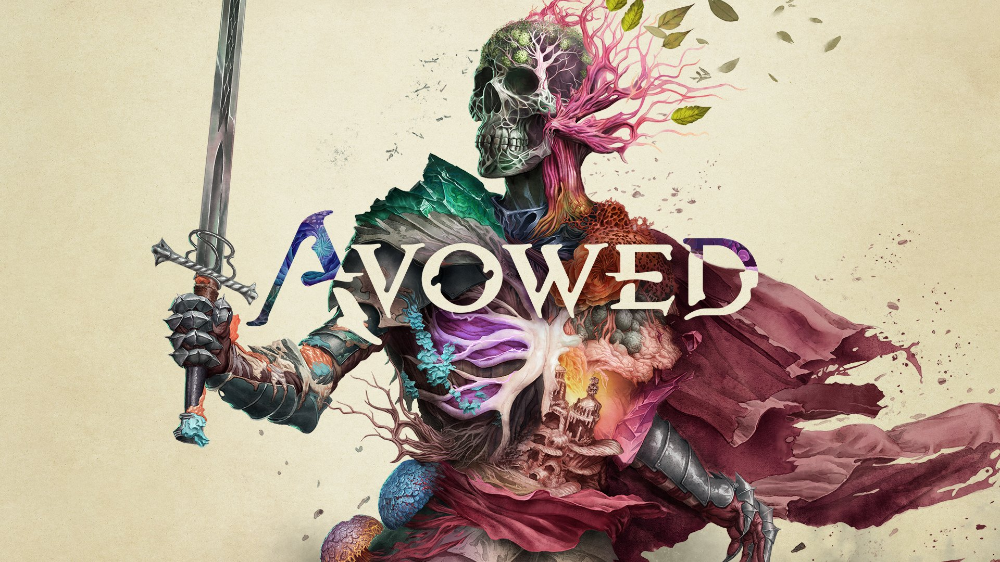
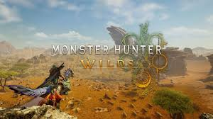
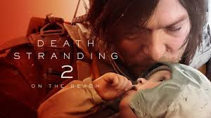
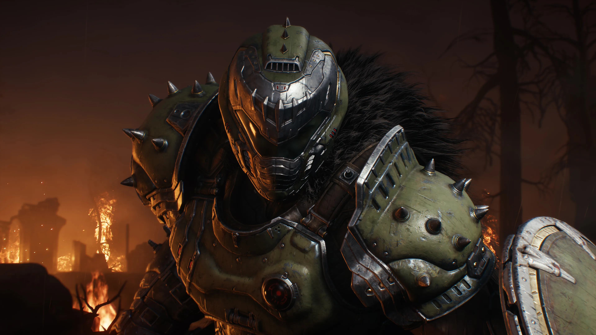

<!DOCTYPE html>
<html lang="pt">
<head>
    <meta charset="UTF-8">
    <meta name="viewport" content="width=device-width, initial-scale=1.0">
    <title>Conexão Gamer</title>

    <!-- Link para o Bootstrap -->
    <link href="https://cdn.jsdelivr.net/npm/bootstrap@5.0.2/dist/css/bootstrap.min.css" rel="stylesheet" integrity="sha384-EVSTQN3/azprG1Anm3QDgpJLIm9Nao0Yz1ztcQTwFspd3yD65VohhpuuCOmLASjC" crossorigin="anonymous">
    
    <!-- Link para o CSS do site -->
    <link rel="stylesheet" href="estilo4.css">

    <!-- Conexões para as fontes do Google Fonts -->
    <link rel="preconnect" href="https://fonts.googleapis.com">
    <link rel="preconnect" href="https://fonts.gstatic.com" crossorigin>
    <link href="https://fonts.googleapis.com/css2?family=Inter:ital,opsz,wght@0,14..32,100..900;1,14..32,100..900&family=Poppins:ital,wght@0,100;0,200;0,300;0,400;0,500;0,600;0,700;0,800;0,900;1,100;1,200;1,300;1,400;1,500;1,600;1,700;1,800;1,900&display=swap" rel="stylesheet">

    <!-- Link para o Font Awesome -->
    <link rel="stylesheet" href="https://cdnjs.cloudflare.com/ajax/libs/font-awesome/6.5.1/css/all.min.css">

    <!-- Ícone da página (Favicon) -->
    <link rel="icon" href="imgs/modelo_logomarca.png" sizes="1024x1024" type="image/x-icon">
    
    <!-- Ícone bootstrap -->
    <link rel="stylesheet" href="https://cdn.jsdelivr.net/npm/bootstrap-icons@1.11.3/font/bootstrap-icons.min.css">

    <!--Css noticia-->
    <link rel="stylesheet" href="noticias.css">
  </head>


<body>
  </html>


  <header> 

    <nav class="nav-bar">     <!--  Incicio da barra -->
      <div class="logo">
        <section class="logo">
          <a href="index.html">  <!-- Link para a página inicial -->
            
          </a>
        </section>
        
      </div>

      <div class="nav-list">
        <ul>
          <!-- Alteração do link para ir até a seção "Últimas notícias" -->
            <!-- Link para a seção "Últimas notícias" na página inicial -->
          <li class="nav-item"><a href="index.html#ultimas-noticias" class="nav-link">Destaques</a></li>
          <li class="nav-item"><a href="Noticias.html" class="nav-link">Notícias</a></li>
          <li class="nav-item"><a href="Lançamentos.html" class="nav-link">Lançamentos</a></li>
          <li class="nav-item"><a href="Diversão.html" class="nav-link">Diversão</a></li>
          <li class="nav-item"><a href="Sobre.html" class="nav-link">Sobre</a></li>
        </ul>
      </div>
    </div>

    <div class="mobile-menu-icon">
        <button onclick="menuShow()"></button>
    </div>
</nav>
<div class="mobile-menu">
  <ul>
<!-- Link para a seção "Últimas notícias" na página inicial -->
    <li class="nav-item"><a href="index.html" class="nav-link">Destaques</a></li>
    <li class="nav-item"><a href="Noticias.html" class="nav-link">Notícias</a></li>
    <li class="nav-item"><a href="Lançamentos.html" class="nav-link">Lançamentos</a></li>
    <li class="nav-item"><a href="Diversão.html" class="nav-link">Diversão</a></li>
  </ul>
  <div class="login-button">
    <button><a href="Sobre.html">Sobre</a></button>
  </div>
</div>
</div>
    </div>

  </header>  <!--  Fim da  barra -->
  

<!-- Seção "Últimas notícias" -->
<div class="container" id="ultimas-noticias">
  <h2 class="ultimas-noticias">Lançamentos futuros </h2>
</div>

<section class="Destaques"> <!-- Últimas notícias começo -->
  <div class="interface">
  
    <!-- Artigo 1 -->
    <article class="itens-container">
      <div class="txt-itens">
        <h3><span>1.	Assassin's Creed Shadows</span><br> </h3>
        <p>Levando a franquia da Ubisoft para o Japão pela primeira vez, Assassin's Creed Shadows é um dos mundos abertos mais aguardados de 2024 e traz dois protagonistas jogáveis: Yasuke e Naoe.
          Plataformas: PS5, Xbox Series X|S, PC
          Data de lançamento: 14 de fevereiro</p>
        <!-- Botão "Ver notícia completa" -->
        
      </div>
      <div class="img-itens">
        
        <div class="trailer">
          <iframe width="971" height="546" src="https://www.youtube.com/embed/mgI0seVFMXY" title="Assassin&#39;s Creed Shadows: Trailer Mundial | Ubisoft Brasil" frameborder="0" allow="accelerometer; autoplay; clipboard-write; encrypted-media; gyroscope; picture-in-picture; web-share" referrerpolicy="strict-origin-when-cross-origin" allowfullscreen></iframe>        </div>
      </div>
    </article>
    
  
    <!-- Artigo 2 (reverse) -->
    <article class="itens-container reverse">
      <div class="img-itens">
        
        <div class="trailer">
          <iframe width="971" height="546" src="https://www.youtube.com/embed/AYvTNAaXMUA" title="Avowed Story Trailer" frameborder="0" allow="accelerometer; autoplay; clipboard-write; encrypted-media; gyroscope; picture-in-picture; web-share" referrerpolicy="strict-origin-when-cross-origin" allowfullscreen></iframe>        </div>
      </div>
      <div class="txt-itens">
        <h3><span>2.	Avowed</span><br></h3>
        <p>Avowed é o próximo RPG do aclamado estúdio Obsidian, e promete uma câmera em primeira pessoa e ambientação no mesmo universo de Pillars of Eternity.
          Plataformas: Xbox Series X|S, PC
          Data de lançamento: 18 de fevereiro<br> </p>
          
      </div>
    </article>
  
    <!-- Artigo 2 (reverse) -->
<article class="itens-container reverse">
  <div class="img-itens">
    
    <div class="trailer">
      <iframe width="971" height="546" src="https://www.youtube.com/embed/znhltdmNy3A" title="Monster Hunter Wilds - Exclusive 4K Gameplay" frameborder="0" allow="accelerometer; autoplay; clipboard-write; encrypted-media; gyroscope; picture-in-picture; web-share" referrerpolicy="strict-origin-when-cross-origin" allowfullscreen></iframe>
    </div>
  </div>
  <div class="txt-itens">
    <h3><span>3. Monster Hunter Wilds</span><br></h3>
    <p>
      Descrito como o maior da franquia até hoje, *Monster Hunter Wilds* é uma das apostas da Capcom para 2024, que promete evoluir o que conhecemos da saga de monstros até hoje.<br>
      <strong>Plataformas:</strong> PS5, Xbox Series X|S, PC<br>
      <strong>Data de lançamento:</strong> 28 de fevereiro
    </p>
  </div>
</article>

  
    <!-- Artigo 2 (reverse) -->
<article class="itens-container reverse">
  <div class="img-itens">
    
    <div class="trailer">
      <iframe width="971" height="546" src="https://www.youtube.com/embed/wbLstJHlC4U" title="Death Stranding 2 On The Beach – Trailer de Anúncio no State of Play | PS5 Games" frameborder="0" allow="accelerometer; autoplay; clipboard-write; encrypted-media; gyroscope; picture-in-picture; web-share" referrerpolicy="strict-origin-when-cross-origin" allowfullscreen></iframe>    </div>
  </div>
  <div class="txt-itens">
    <h3><span>4.	Death Stranding 2: On the Beach</span><br></h3>
    <p>
      Hideo Kojima estará de volta em 2025 com Death Stranding 2: On The Beach, a sequência direta do jogo de 2019 — que promete mais "kojimices".
      Plataformas: PS5
      Data de lançamento: a definir
      <br>
      
    </p>
  </div>
</article>


    <!-- Artigo 5 (reverse) -->
<article class="itens-container reverse">
  <div class="img-itens">
    
    <div class="trailer">
      <iframe width="971" height="546" src="https://www.youtube.com/embed/JcM9_xQfBBA" title="DOOM: The Dark Ages | Trailer Oficial 1 (4K) | Disponível em 2025" frameborder="0" allow="accelerometer; autoplay; clipboard-write; encrypted-media; gyroscope; picture-in-picture; web-share" referrerpolicy="strict-origin-when-cross-origin" allowfullscreen></iframe>
    </div>
  </div>
  <div class="txt-itens">
    <h3><span>5. Doom: The Dark Ages</span><br></h3>
    <p>
      Outro retorno com data marcada é o de *Doom Slayer*, em *Doom: The Dark Ages*, que quer voltar às raízes infernais da franquia. Data de lançamento: a definir<br>
      <strong>Plataformas:</strong> PS5, Xbox Series X|S, PC<br>
      
    </p>
  </div>
</article>
 

<!-- Artigo 5 (reverse) -->
<article class="itens-container reverse">
  <div class="img-itens">
    
    <div class="trailer">
      <iframe width="971" height="546" src="https://www.youtube.com/embed/QdBZY2fkU-0" title="Grand Theft Auto VI Trailer 1" frameborder="0" allow="accelerometer; autoplay; clipboard-write; encrypted-media; gyroscope; picture-in-picture; web-share" referrerpolicy="strict-origin-when-cross-origin" allowfullscreen></iframe>    </div>
  </div>
  <div class="txt-itens">
    <h3><span>6.	Grand Theft Auto VI</span><br></h3>
    <p>
      A Rockstar Games promete retomar a franquia GTA em 2025, com o sexto título da linha principal, que traz um casal de criminosos como protagonistas.
      Plataforma: PS5, Xbox Series X|S
      Data de lançamento: a definir
        <br>
      <strong>Plataformas:</strong> PS5, Xbox Series X|S, PC<br>
      
    </p>
  </div>
</article>


  
  </div>
</section> <!-- Últimas notícias fim -->


  <section class="socias">    <!-- rodape começo -->
    <div class="interface">
  
      <article class="txt-socias">
        <h3>Fique online conosco!</h3>
      </article>
  
      <article class="icons-socias">
        <a href="https://www.instagram.com/conex.aogamer?igsh=MWRkeXNmM211NjB4cg==" target="_blank">
          <button><i class="bi bi-instagram"></i> <p>Instagram</p></button>
        </a>
        <a href="https://x.com/ConexaoGamerOfc?s=08" target="_blank">
          <button><i class="bi bi-twitter-x"></i> <p>Twitter X</p></button>
          <a href="Coneexao.gameroficial@gmail.com" target="_blank">
            <button>
              <i class="bi bi-envelope-at"></i>
              <p>Email</p>
            </button>
          </a>
      </article>
  
    </div>
  </section>   <!-- rodape fim -->
  
<div>

</div>

    <script src="https://cdn.jsdelivr.net/npm/bootstrap@5.0.2/dist/js/bootstrap.bundle.min.js" integrity="sha384-MrcW6ZMFYlzcLA8Nl+NtUVF0sA7MsXsP1UyJoMp4YLEuNSfAP+JcXn/tWtIaxVXM" crossorigin="anonymous"></script>
    <script src="script.js"></script>
    <link rel="stylesheet" href="script02.js">
    
</body>
</html>
